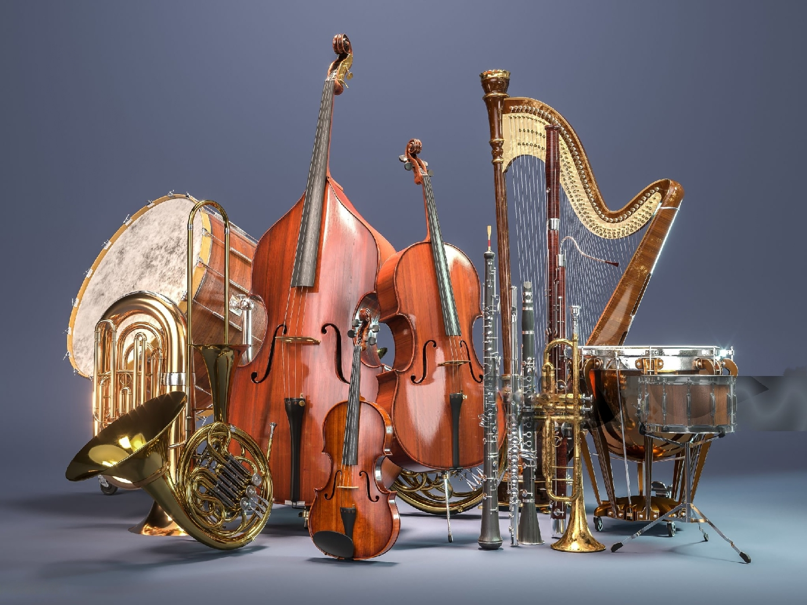

Welcome to our IT Project!
If you are here, you are likely to get an overview of our work and learn how we explored the ArCo Knowledge Graph. The Project was indeed related to the ArCo ontology, aiming at proposing new relevant knowledge (with the form of RDF triples) that could enrich the ArCo library and documentation. To do so, the employment of Large Language Models (LLMs) was not only required but also an essential tool in our research. Our team is made up of 4 members:
Michela Trois
Elena Susanu
Letizia Vincareti
Salvatore Romano
We are a group of students enrolled in the Master’s degree program Language, Society and Communication at the University of Bologna.
